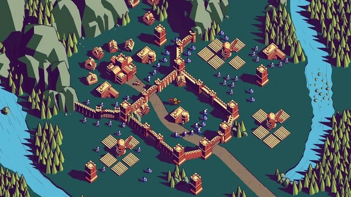

Nordfels
Level composition
Overview
Nordfels (german for "North rock") is the first true Level of Thronefall.
It is one of the 2 levels available in the demo version.
The level features a large mountain range in the north and a U-shaped river to define the level border.
Enemy units spawn from north-east, east, south-east, south, and west of the castle with the west and south and northeast of the castle only spawning flying units.

A picutre of the Nordfels castle fully built, upgraded and with default troops position.
Norfels' Castle layout is split into 3 areas:
- Outisde area unprotected by walls: This area consists of 3 mills, 3 Watchtowers and 1 archer barracks.
- The Front of the castle: Area with 3 houses, 4 Watchtowers and 1 barracks.
- The Inner Castle: Area with 7 houses, 3 Watchtowers, 2 barracks (1 archer and 1 melee), and the Castle center building.